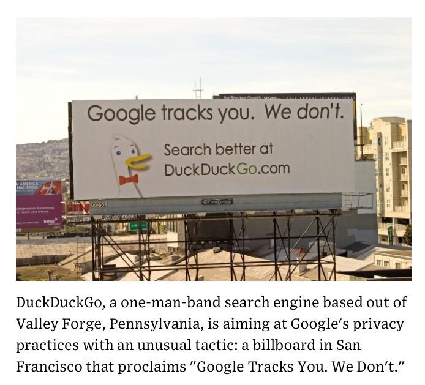

穿越寒冬的独行者
Contents
2018年有很多故事可以写，但是到最后一天的时候，让我选一件事来写，我想写的是duckduckgo这个搜索引擎。选择它是有原因的，这个搜索引擎创始于2008年，正好是第10个年头。

即使在今天，听说过这个搜索引擎的人也不多。上个月（2018.11），它的每日搜索量第一次超过了3000万次，很多科技媒体用非常小的版面报道过这件事。中文也有报道，基本上就是“一句话新闻”这样的待遇，没人多想什么。这不意外，每天3000万搜索听起来不小，但是放在整个搜索市场可以算的上微不足道。做为对比，Google早就不再发布每天准确的搜索量，但根据前几年发布过的数字和增长率，大致能推算出来，一般被认为是4万~8万次搜索每秒。即使用最低预测，要超过duckduckgo一整天搜索量，Google只需花750秒==12.5分钟。
在搜索引擎市场上，每天3000万搜索量太小了，比被所有人都认为早就完蛋了的Yahoo搜索还少好几倍。但是这样一对比，这个在搜索引擎市场只占0.x%份额的产品竟然存活了10年，这就是一个有意思的故事。再考虑它不属于任何大公司，是个完全独立的搜索引擎，那就更有意思了。它是如何开始的，如何存活下来的，谁是它的用户？
10年已经足够长了，2008年，苹果刚刚发布iPhone 3G，到接近年末，Android的第一个手机，G1到年底才勉强上市，诺基亚仍然占统治地位，移动互联网才刚刚有了一点影子。2018年再扭头看回去，简直是个完全不同的时代。但是在那个时代，搜索引擎市场已经成熟了，做一个新的通用搜索引擎，听起来已经像个笑话了。要知道，搜索引擎市场的最大巨头Google，已经成立了10年，就算是其他语言的搜索，中文区最大的百度2000年创立，俄语区最大的yandex比google还早，90年代初就存在了。即使是最年轻的中文搜索引擎搜狗，也成立于更早的2004年，2006年搜狗已经靠着拼音输入法有了自己的一席之地。到了2008年，没人再想挑战这个市场了。
2008年的主流看法是：做一个通用搜索引擎是不可能了，一方面是竞争对手过于强大，全是上市公司，都非常有钱，都有忠实用户或者各种壁垒造成的基本垄断，另外一方面是搜索引擎系统耗资巨大，通常认为要融到一笔不小的投资才能开始。2007年后半年，金融市场就笼罩在“金融危机快来了”的恐惧中，2008年下半年金融危机终于爆发。在那个市场情况下，更没有投资人会投一大笔钱在这种“一看就没戏”的项目上。
不过世界上总有一些例外。Duckduckgo就是这种例外的产物。(为了缩短点篇幅下面使用其官方简称ddg）
Gabriel Weinberg并不是创业新兵。在开始ddg项目之前，他开过不少家公司，做了好几个产品，其中一个算是成功，以1000万美金的价格被另外一家公司并购，其他的都失败了。卖掉公司之后，他希望下一个产品做一个自己喜欢的方向，可以一直做下去。什么是自己喜欢的呢？他自己也不知道，于是干脆一个领域一个领域做起来试试看，不喜欢就放弃。就这样又试了将近两年，最终他走到了搜索引擎这条路上。
此时已经到了2008年，如前所述，那绝对不是一个做搜索引擎的好时代。我清楚的知道这些，因为当时我也在做搜索引擎，只不过我们是在做一个搜索云服务系统，不是通用搜索。即使这样也相当不容易，这是另外的故事，有机会再讲。
Gabriel决定一个人开始做一个搜索引擎。按照Google这种“索引全球信息”的模式做，那当然不可能，按照那种模式，他自己卖掉上家公司的1000万美元都扔进去也未必够启动项目。于是他决定从一个简单的模式开始，即利用提供搜索API的产品，聚合他们的站内搜索结果，重新排序呈现到一个页面上。严格来说这算不上一个真正的搜索引擎，这种做法局限性很大，除了内容源有限之外，从每个服务API拿回数据拼接页面的过程很慢，产品体验也不好。不过它总算是个开始，之后他开始用一系列开源软件搭建自己的爬虫系统，建立自己的索引，不再单纯依靠别人的搜索结果拼接。这个过程并不是那么复杂，开源工具Apache Solr就能很好的满足需求。尤其是ddg只面向英文市场，没有搜索分词的困难，又只面对有限的搜索源，不会遇到索引量大规模膨胀的问题，总体投资可控。这时候的ddg像是一个简单开源软件拼接起来的工具，它需要很多人力去精心调配各种结果，收集各种搜索源，至于搜索技术本身，在这个阶段完全不做任何修改的开源软件都足够用了。
除了搜索页面，ddg还在力推Instant Answers这个概念，它指的是在搜索结果页面上直接显示答案。Google早在2007年就开始推广搜索产品onebox，开始在标准搜索结果页面上展示一些专有内容，比如电影，书籍，购物等等。今天这些都已经是大家都熟知的搜索特性了，但是在10年前，这仍然是一个新概念。如何准确的命中用户搜索结果，在onebox中展示，这需要复杂的算法和大量历史搜索数据做为基础，无论在数据积累还是技术上，这都是一个挑战。ddg的做法相比Google有点可笑，它干脆抓了一堆常用的内容和关键词，直接存到了数据库里面。这种解决方案和他们处理搜索本身一样，它不能称之为一个搜索引擎，但是勉强能用。
2008年9月，ddg正式发布。做为当时第一批用户的我，用过之后的感受是：“这玩意也能用？”然后默默关掉了窗口。尽管在hacker news的讨论上，创始人Gabriel一次又一次的表示“你坚持用一周，肯定会喜欢它”。我不知道那个时候什么人会坚持用一周，至少我是没能坚持下去。
不过Gabriel倒是不在乎大家没能坚持用下去，他仍然继续优化他的产品。尽管他走的和Google是完全相反的道路。Google的做法是首先订好算法和框架，然后尽可能让机器去干活。比如，Google一开始就确定了根据链接关系来确定页面权重的模式，设计好Pagerank算法，再实现算法，之后就是程序按照算法顺着页面之间的链接关系一层层把内容抓回来，建立索引，用户输入关键词，就在索引中命中关键词，按照Pagerank算法排序，把结果呈现给用户即可。这个过程中人是不参与的，人的工作集中在优化算法和修补漏洞上。Google始终在骄傲于“算法决定搜索结果，人不干涉它”。
ddg走的是完全相反的道路，人挑选内容源，人决定哪些更重要，应该放在数据库里，甚至社区可以贡献内容，贡献Instant Answers结果…一切都是人在做决策，ddg最多的代码是perl和javascript完成的，这足以说明了他们几乎不去触碰开源的搜索系统核心部分，只是用一系列的脚本把他们认为重要的结果塞到索引库里，以及把一些他们觉得是spam的内容农场从索引库里挪出去。毕竟，ddg也从来没有“索引全球信息”这么宏大的梦想。
2009年，ddg提出了一个重要的概念，叫做“尊重隐私的搜索”。更技术的表达是“不追踪用户行为，不存储用户搜索历史”，这个概念在2009年听起来根本不重要，那还是一个大家觉得“我热爱互联网，我愿意出卖隐私”的时代。但之后的这些年里面，世界变得越来越快，到现在它已经变成ddg的核心竞争力之一。
到2010年年末，ddg的每日搜索量始终在4万、5万这个数量级别波动，而2009年，Google的每日搜索量已经超过了10亿次。2011年1月，Gabriel在旧金山租了一个月的高速公路广告牌，只有一块。上面写着“Google追踪你，我们不会”。广告牌引发了一轮猎奇的媒体报道，广告效果明显反映在搜索量上，使得ddg每日搜索量翻倍，开始超过了10万。在那个时候，科技行业从业者中一部分人已经开始思考Google的隐私策略存在的问题，在旧金山这个科技重镇的这块广告牌，影响了这些人。

我在这一轮媒体报道之后，重新开始尝试ddg。这次它给我的印象不错，我常用的搜索，比如github/stackoverflow/wikipedia之类的站点已经被索引的比较完全了，尽管它的搜索范围仍然限于有限站点，但已经可以解决一部分问题。这得益于Gabriel在前面2年中的艰苦工作，到这个时候，这还是一家一个人的公司，只有创始人Gabriel一个人。办公室和服务器仍然在Gabriel家的地下室里。
我在这个时候开始把它设置成浏览器的默认搜索引擎，我知道它不好用，但是我希望能给他贡献一点点流量，并且希望这点流量能帮助这个产品存在下去，从而可以存在一个选择。这种可替代选择不必在功能上完全击败竞争对手，只要它能满足超过及格线的使用需求，就比没有好很多。
2011年的年底，坚持不融资的Gabriel终于去给ddg融了第一笔天使投资，雇了第一个员工，在ddg发展的这10年里，这应该是唯一一次融资。不过ddg的真正快速增长的时代，是在之后的两年才逐渐开始的。2013年，NSA的外包雇员斯诺登逃到香港，对全世界公布了美国政府正在监控互联网的棱镜计划。人们终于开始第一次有证据的意识到，隐私问题不再是无关紧要的。同样的问题，用隐私换更好的搜索质量，在2008年，大部分人会回答“没问题”，但到了斯诺登事件之后，至少有一小部分人会回答“不能接受”。ddg符合了他们的理念，如何才能不泄漏隐私？只有完全不存储不必要的隐私数据才能做到。到5年之后的今天，欧盟的GDPR隐私数据保护法已经生效，更多的人认同这个观点。现在逃离Google/Facebook逐渐成了新时尚，ddg成了最好的搜索引擎替代产品之一，也逐渐被各类浏览器内置成默认搜索引擎之一。
到今天为止，这仍然不是一个“创业企业成功”的故事。到现在ddg只有50个员工，在搜索引擎市场拥有几乎可以忽略的市场份额，但是它能存活到今天，本身就是一件有意义的事情。
Gabriel在不打算融资的3年半养成的习惯仍然主导着这家公司，并且使得它生存的更顽强。一直到今天，ddg的主要服务器已经搬到了amazon云服务上，但是还有不少组件仍然躺在Gabriel的地下室里——那些对即时响应要求不高的服务，比如抓取某些数据装进数据库，这样的任务在自家地下室进行，仍然比使用云服务便宜的多。公司虽然有50个人，但是他们都分布在世界各地，他们在一张地图上标记出了所有人的位置，几乎没有两个人在同一个城市，所有人都是远程办公。这大概是把远程办公贯彻最彻底的互联网公司。

它所谓的“总部”，也只是在宾夕法尼亚州的一个小镇主街上的一栋普通房子，并且还是和另外一家公司共享的。按照我的经验，每月租金不会超过1000美金。如果想要个直观点的印象，可以看看街景照片：
除了ddg之外，我猜这个镇上和“科技”最接近的公司，应该是修理手机和电脑的店。至于为什么选中它？我从地图上看，这是距离创始人Gabriel家最近的小镇，大概有5英里远吧。
这些和其他科技公司完全不同的离经叛道的举措是有收获的，它使得ddg始终是一家盈利的公司。盈利来源很简单，他们只靠关键词广告即可获得不错的收入。他们没有公布过收入的具体数字，但是推测应该算的上有钱的公司。这些盈利除了能养活几十个员工，支付各种云服务开支之外，ddg每年还对各种开源项目和维护互联网自由的相关组织捐款，2018年他们的总捐款额高达50万美金。Ddg成功把自己放在了一个微妙的位置，它有一定的市场占有率，有越来越多的忠诚用户，但是它坚定的隐私策略使得这个市场中的大玩家不可能通过竞争消灭它，也不可能跟随它，更不可能收购它。这个奇妙的位置使得它可以按照最初的信念一直生存下去，不需要融资，不需要为了增长率出卖原则，不需要上市。事情似乎重新回到了“你只需要做好产品，用户自然会来”这个远古时代的路线上。对于2018年正在发生的，比如烧钱无数的共享单车大战，他们好像发生在两个平行世界里。
在互联网已经变成了以资本游戏为主的时代，ddg的存在给了很多人勇气，使得他们有机会去做一些不同的事情，一些理智看起来毫无胜算的事情。回顾这10年的历史，最艰难的应该是创始人Gabriel独自扛下来的最早的3年多。那时候的他就像沿着一条大雾中的公路独自行走，不知道前面有多远，不知道周围有什么，只能看到一辆辆车呼啸而去。没错，他刚刚卖掉公司，有1000万美金，生活不愁。但是大多数取得了这样程度成功的人，会把下一个目标定为“再做一家上市公司”，去融更多的钱，打更狠的仗，而绝对不愿意选一条未知而孤独的路自己走下去。
在ddg发展起来之后的年头里面，更多的人开始尝试做一个“在某种程度上替代Google”的搜索系统，比如法国人的qwant，塞浦路斯的searchencrypt，都是类似概念的搜索引擎。回到搜索本身，做为用了长达7年ddg的用户，我的感受是什么？确切的说，随着ddg搜索范围的扩展，今天用起来已经体验不错了。ddg从2012年提供了一个叫做!bang的功能，在搜索词前面加上一个前缀，就可以转向其他搜索引擎。比如 “!g 电影” 就会直接跳到Google搜索关键词“电影”。“!a switch”，就会跳到amazon.com 搜索switch。这个功能很简单，但是有效降低了尝试新搜索引擎的成本。每个关键词用户都可以先在ddg搜索试试看，对搜索结果不满意再转向google。我比较直观的体验是这些年里，我使用!g的比例越来越低了。更有趣的是，Google越来越趋向于根据用户数据，给不同用户展示不同的搜索结果，结果是ddg的搜索结果总是会和Google的不太一样，可以获得一些在Google搜索不到的结果。这使得ddg更有竞争力，它永远能成为google搜索结果的有效补充，被使用的价值也就越来越高，2016年美国总统大选之后，人们又把它做为突破“信息同温层”的重要工具。
今天和10年前对比，互联网世界发生了翻天覆地的变化，互联网渗透率比10年前高出太多，但是大公司的垄断、资本的力量也强得多。互联网渗透率高意味着，再小众的需求都能找到足够多的用户，一个保持低成本运营的团队，靠满足这些用户活下来已经不那么困难。只是资本会对你毫无兴趣。这类事情在市场热火的时候没人想做，人人都有一个上市的梦想。但是当市场进入冬季的时候，这种项目就显得很有吸引力。
看看2008年的纳斯达克指数，对这个说法可能更有感觉。

有人说2019年会是未来十年最好的一年，即使如此，对整个世界来说也不一定是坏事，也许又能让我们多一些选择呢？
说到这种小而有用，可以养活自己生存下去的搜索引擎，连一百万人口的塞浦路斯都有，中文区竟然没有这类产品，有点遗憾。我有一位朋友曾经想做一个中国的医疗搜索引擎。大家都抱怨医疗信息没有可靠的搜索，这显然是个需求。但是前司用竞业禁止官司拖住了这件事，从而使得这个项目长期没法真正开展。希望他2019年能摆脱这些麻烦，真正把这个产品做出来。
Author Huo Ju
LastMod 2018-12-31